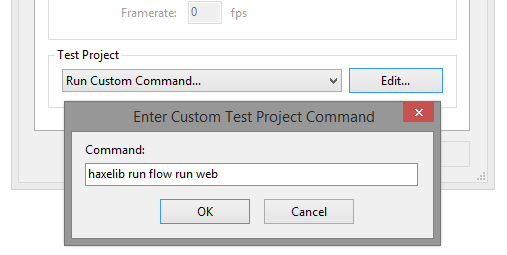

Snowkit is an open-source system of tools, libraries and developers, which aims to provide a high quality workflow for Haxe developers.
The kit offers a set of libraries, which can be used to create Haxe frameworks, applications and games. In this tutorial I'll cover the installation of the 3 core components of the functional set - flow, snow and luxe.
Flow is a tool for building and managing Haxe projects. Snow is a toolkit for creating crossplatform apps and games on a low level. Finally, Luxe is a 2d game engine. The whole configuration can be compared to OpenFL as another means of creating cross-platform apps and games using Haxe.
Of course, in order to use snowkit tools and libs, you need to have Haxe installed.
Note that all of the components in snowkit are still under development, so future updates might change these steps a bit.
Firstly, you'll need to clone 3 git repositories. They're all hosted on GitHub, so go ahead and clone Flow, Snow and Luxe to a local directory.
When you have all of these downloaded, use haxelib to create a local library entry for each of the repositories.
The command lines follow this pattern:
haxelib dev flow path/to/flow
haxelib dev snow path/to/snow
haxelib dev luxe path/to/luxeIf you're running Windows, you can Shift+Right Click in the parent directory of a library to open a command line with that path already open. This way, if your snow code is contained within a "snow" directory, the haxelib command to register that lib will be:
haxelib dev snow snowOnce that's set up, you can begin setting up your IDE for working with luxe engine.
There are official plugins for Sublime Text available, and there's also a template for Flash Develop that you can use.
You can go ahead and create a new luxe engine project using any of the IDEs provided now. You can build and test the project using flow. Building a project is as simple as going to the directory of that project and running this command:
flow runAlternatively, if you don't have the flow alias set up, you can use haxelib to access flow:
haxelib run flow runYou can also specify the targeted platform. I find that the "web" target compiles the fastest and is better for debugging.
haxelib run flow run webOther platforms include windows, mac, linux, android and ios. Note that snow does not compile to Flash, the "web" platform in this case is JS based. Just like with OpenFL, you'll need specific software installed to be able to compile to native C++ targets (such as Visual Studio for Windows or XCode for Mac).
If you're using Flash Develop, there's a shortcut that you can set up to be able to build luxe engine projects quickly by pressing Ctrl+Enter, instead of running the flow commands manually.
Go to the projects properties window and Edit the "Run Custom Command" field. Enter the desirable command there:
It will now be executed every time once you press build the project.
This should be enough to get coding, if you'd like to find out more about snowkit in detail, check out the official community page.